Stage1#
Warning
このテキストは2017年4月に書かれたテキストをWeb用に変換したものです
それではいよいよゲームを作っていきます。本章では以下の内容を学習します。
- 標準の3Dオブジェクトの配置方法
- 物理的挙動の反映
- 入力を受け取る
標準で用意されている3Dオブジェクトを配置しよう#
下図のようにヒエラルキービューの左上にある 「Create」->「3D Object」->「Sphere」 を選択してください。 すると、ヒエラルキービュー上に「Sphere」が生成されます。 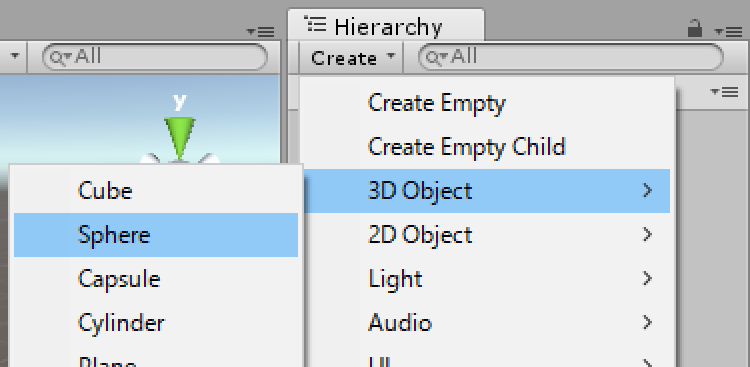
それではインスペクタービューを見てください。 まずは下図のように赤枠部分を編集してください。

まず、一つ目の赤枠はゲームオブジェクトの名前です。 次に二つ目はゲームオブジェクトの位置、回転、大きさを示したTransformコンポーネントです。それぞれ順に「Position」、「Rotation」、「Scale」が対応しています。 生成したボールはプレイヤーとして操作できるものにしていきます。
同様にして、「Create」->「3D Object」->「Cube」を選択し、オブジェクト名とTransformを下表のように変更してください。
| 変更箇所 | 変更内容 |
|---|---|
| オブジェクト名 | NormalRoad |
| Position | (0, 0, 0) |
| Rotation | (0, 0, 0) |
| Scale | (3, 1, 10) |
最終的に下図のように配置された状態にしましょう。
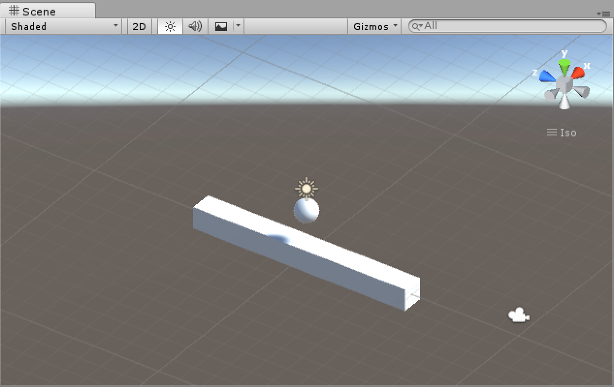
さて、ここで一度保存をしておきましょう。 下図のようにプロジェクトビュー上で 右クリック->「Create」->「Folder」 を選択し、名前を 「Scenes」 にしましょう。 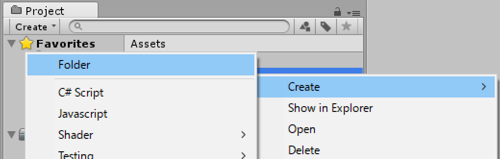
フォルダーができたらCtrl+Sでシーンを保存します。下図のように保存先は先ほど作成したフォルダーです。名前は「Stage1」としましょう。 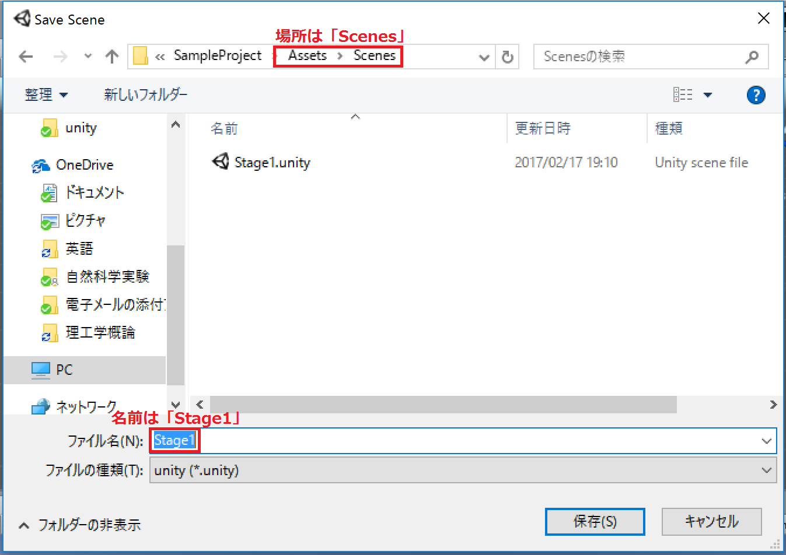
ここまでできたら、ゲームを再生してみてください。 プレビューパネルの再生ボタンをクリックしましょう。
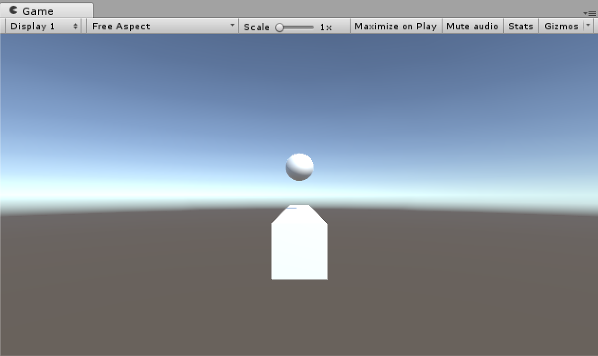
上図のように全く動きません。 これは、Playerに重力が反映されていないためです。 次節ではこの方法を学んでいきましょう。
物理的挙動を反映させよう#
PlayerにRigidbodyコンポーネントを追加する#
力学的な挙動をゲームオブジェクトに反映させるためにはそのオブジェクトにRigidbodyコンポーネントを追加する必要があります。 「ヒエラルキービューでPlayer」->「インスペクタービューの一番下にあるAdd Component」->「Physics」->「Rigidbody」を選択してください。 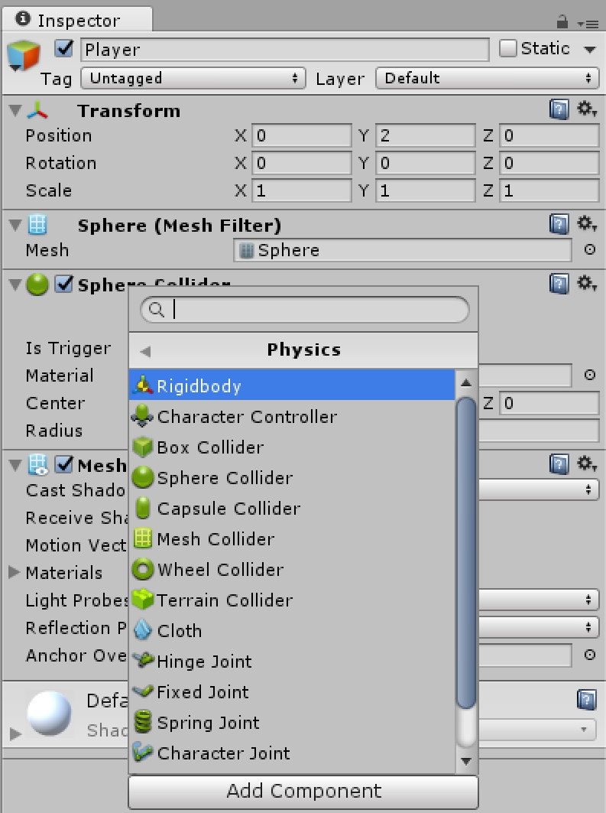
インスペクタービュー上にRigidbodyが追加されていることを確認してください。 また、Rigidbodyコンポーネントの「Use Gravity」にチェックがついていることを確認してください。 その後ゲームを再生してみましょう。PlayerがNormalRoadに落下することがわかると思います。
ここで、二つのオブジェクトが衝突したのはRigidbodyを追加したからだ、というわけではありません。 これはColliderコンポーネントが追加されているためです。
Collider#
Colliderとはゲームオブジェクト同士が接触したかどうかを判定するコンポーネントです。 作成したゲームオブジェクトを確認してみると、PlayerにはSphere Colliderコンポーネントが、 NormalRoadにはBox Colliderコンポーネントがそれぞれアタッチされています。 試に以下のようにPlayerのSphere Colliderコンポーネントの「Radius」を1に変更し、ゲームを再生してください。
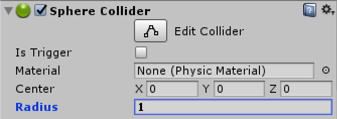
Playerが以下のように少し浮いたところで静止します。
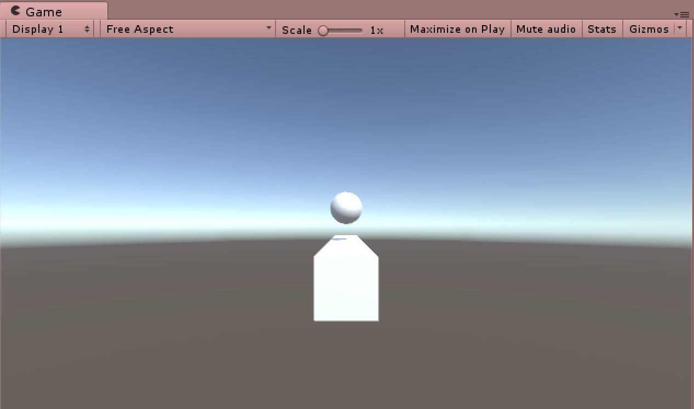
つまり、Colliderと見た目は必ずしも一致しないのです。 実験が終わったところで、「Radius」を0.5に戻しておきましょう。
いくら物理的な挙動をしても、操作ができなければゲームにはなりませんよね。 次節ではその方法を学んでいきます。
Playerを動かそう#
Playerを操作するためには以下の過程を踏む必要があります。
- キーボードの入力を受け取る。
- 入力に従って、適切な動作をPlayerに与える。
キーボードの入力を受け取るためには、スクリプトを書いていく必要があります。 まずはUnityでのスクリプトがどんなものか見ていきましょう。
フレームを知ろう#
スクリプトを書くにあたって、まずフレームについて理解しなければなりません。 パラパラ漫画を想像してください。 パラパラ漫画では短時間の間に何枚もページをめくってアニメーションを作っていますね。 Unityでも同じようにしてゲームを描写しており、パラパラ漫画でいう一枚一枚のページが1フレームに当たります。 ただし、Unityでは操作によって描写は変わるので、あらかじめ保存された画像を切り替えているわけではなく、毎時間画像を作成していきます。 この処理をレンダリングといいます。 このように、リアルタイムで演算や描画が行われているため、PCの環境によって1フレームあたりの時間はリアルタイムで変更してしまいます。 この時間を表す指標としてよく使用されるのが1秒間当たりのフレーム数、すなわちFPS(Frame Per Second)です。 FPSが大きいほど滑らかな映像となり、小さいほどカクカクなものとなります。
StartメソッドとUpdateメソッド#
まずはスクリプトを作成していきましょう。「プロジェクトビュー上で右クリック」->「Create」->「Folder」を選択し、 フォルダー名を「Scripts」とします。
そしてScriptsフォルダーを開き、下図のように、 「右クリック」->「Create」->「C# Script」を選択し、名前を「Sample」とします。 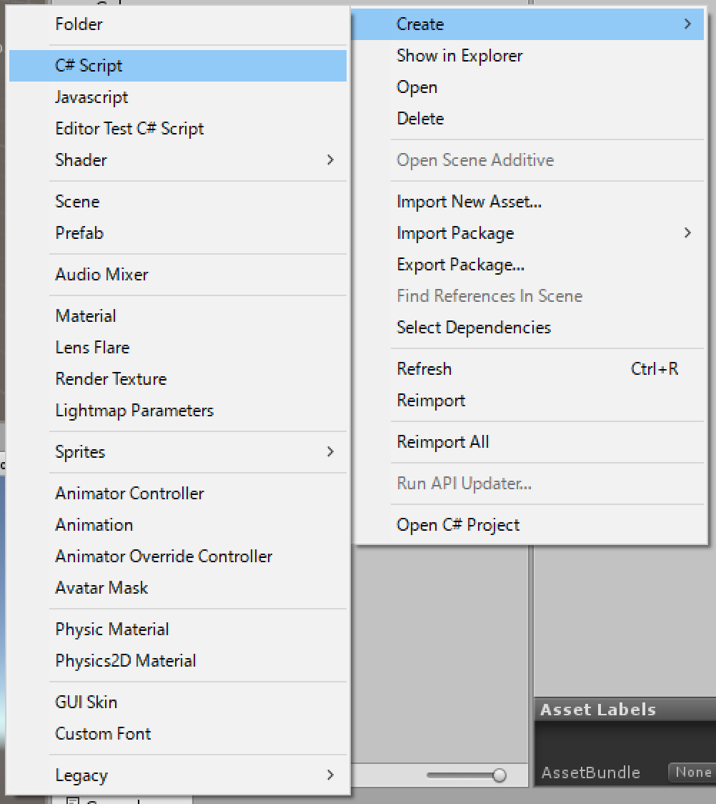
作成が終わったら、スクリプトを開き、中身を以下のように編集しましょう。
1 2 3 4 5 6 7 8 9 10 11 12 13 14 15 16 17 | using UnityEngine; using System.Collections; public class Sample : MonoBehaviour { // Use this for initialization void Start () { print("Start"); } // Update is called once per frame void Update () { print("Update"); } } |
入力が終わったらCtrl+Sで保存しましょう。 さて、各プログラムの説明は後にすることにして、まずは動作を確認してみましょう。以下の図のように、 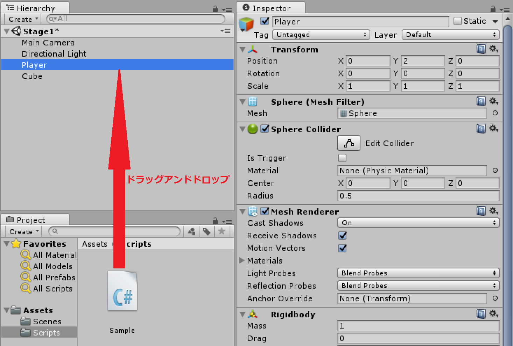 Sample.csをヒエラルキービュー上のPlayerへドラッグアンドドロップしましょう。
Playerのインスペクタービューに「Sample(Script)」というコンポーネントが表示されていることを確認してください。 それでは、ゲームを再生してみましょう。 コンソールビュー上に以下の図のようなメッセージが表示されていたら成功です。 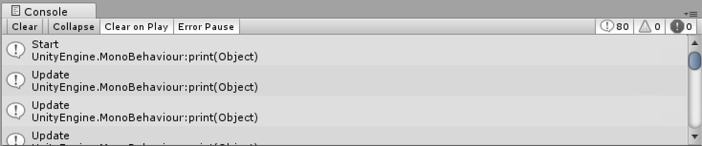 表示されたメッセージを一番上までさかのぼり確認すると、はじめにStartが表示され、その後Updateが沢山書かれています。 (バージョンによって多少表示が異なります。)
それでは、コードの解説をしていきます。 まず、1~4行はおまじないだと考えてください。
7行目
7 | void Start () { |
void Start () { //ここに実行したい内容を記述する。 }
9行目
9 | print("Start"); |
print(Object)のように記述することで、コンソール上に()内のObjectを表示してくれます。
このメソッドはゲームの動作には全く影響しません。
バグの原因を探ったり、ゲームが正しく動作しているか確認したりするために使用します。
13行目
13 | void Update () |
void Update() { //ここに実行したい内容を記述する。 }
Sampleコンポーネントはこの先使用しないのでPlayerから取り除いていきます。 下図のように、「Sampleコンポーネントの上部で右クリック」->「Remove Component」を選択します。 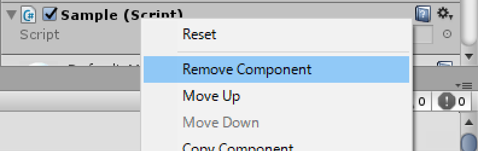
キーボードの入力を受け取る#
ここからはPlayerのスクリプトを作成してしていきます。
クラスやメソッドなどが沢山でてきますが、よくわからない場合は流し流し読んでください。
今回はキーボードから矢印キーの入力を受け取り、それに応じてPlayerに力を加えます。すなわち、Rigidbodyコンポーネントに力を加えるのです。
「プロジェクトビュー上で右クリック」->「Create」->「C# Script」 を選択し、名前を PlayerController」 とします。
それでは、スクリプトを開き、public class PlayerController : MonoBehaviour { }の中身を以下のように編集しましょう。
1 2 3 4 5 6 7 8 9 10 11 12 13 14 15 16 17 18 19 20 21 22 | [SerializeField] int speed; Rigidbody playerRigidbody; float x = 0f; float z = 0f; void Start() { playerRigidbody = GetComponent<Rigidbody>(); } void Update() { x = Input.GetAxis("Horizontal"); z = Input.GetAxis("Vertical"); } void FixedUpdate() { Vector3 direction = new Vector3(x, 0, z); playerRigidbody.AddForce(direction.normalized * speed); } |
1行目
1 | [SerializeField] int speed; |
[SerializeField]をつけることによってインスペクター上で値を変化させることができます。
実際に確認してみましょう。
PlayerController.csをヒエラルキービュー上のPlayerにドラッグアンドドロップしてください。
次に、インスペクタービューを見てください。
以下の図のようにspeedを入力するウィンドウが作成されているはずです。
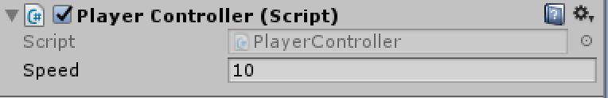
ここには10を入力しておきましょう。
3行目
3 | Rigidbody playerRigidbody; |
intやstringなどと同様に、型として宣言できます。
今回はRigidbodyコンポーネントに力を加えることで移動を実現するのでRigidbody型の変数を宣言します。
ちなみに、本書ではゲームオブジェクトにアタッチされているクラス(正確にはインスタンス)のことをコンポーネントと呼んでいます。
4-5行目
4 5 | float x = 0f; float z = 0f; |
移動の入力を受け取る変数を宣言しました。
入力結果のうち進行方向に対して平行成分をxに、垂直成分をzにそれぞれ代入します。
7-10行目
7 8 9 10 | void Start() { playerRigidbody = GetComponent<Rigidbody>(); } |
ゲームオブジェクトを生成したと同時にPlayerのRigidbodyコンポーネントを取得します。
さて、6行目を見てください。
GetComponent<>()はそのゲームオブジェクトについているコンポーネントを<>内に記述することで取得することができるメソッドです。
このようにして、PlayerについているRigidbodyコンポーネントを変数playerRigidbodyに代入することができました。
12-16行目
12 13 14 15 16 | void Update() { x = Input.GetAxis("Horizontal"); z = Input.GetAxis("Vertical"); } |
毎フレームキーボードからの入力を受け取って先ほど宣言したx、zに代入しています。
Inputはプレイヤーからの入力を扱うクラスです。
GetAxis("Horizontal")は矢印キーの入力を左から右にかけてそのボタンの押し具合によって-1~1の値をとります。
つまり左が押されていればその値は-1に、右が押されていればその値は1、どちらも押されていなければ0というようになります。
GetAxis("Vertical")はGetAxis("Horizontal")とは違い、上下キーに対応しています。
Input.GetAxis(name)によってInputクラス内のGetAxisメソッドを使用することができます。
18-22行目
18 19 20 21 22 | void FixedUpdate() { Vector3 direction = new Vector3(x, 0, z); playerRigidbody.AddForce(direction.normalized * speed); } |
ここにはRigidbodyコンポーネントに力を加えるコードが書かれています。
18 | void FixedUpdate() |
FixedUpdateメソッドはFPSに左右されず、一定の間隔で呼ばれます。
今回のように力を加えたり、物体を移動させたりする場合はUpdateメソッドではなく、FixedUpdateメソッド内に記述するようにしましょう。
20 | Vector3 direction = new Vector3(x, 0, z); |
Playerに力を加えるために、受け取った入力を三次元のベクトルにしています。
Vector3は三次元のベクトルを入れる型で、今回はdirectionという名前の変数にしました。
新しくVector3を作る場合は上のコードのnew Vector3(x, y, z)のように代入します。
21 | playerRigidbody.AddForce(direction.normalized * speed); |
Rigidbodyコンポーネントの中には、力を加える関数が存在します。
それがAddForce()です。
rigidbody.AddForce(Vector3)でrigidbodyに指定した向きで力を加えることができます。
このrigidbodyには力を加えたいゲームオブジェクトのRigidbodyコンポーネントを持った変数を入れてやります。
今回はPlayerに力を加えるので、先ほどPlayerのRigidbodyコンポーネントを代入したplayerRigidbodyを入れます。
また、vector3.normalizedによって、任意のvector3を単位ベクトルに直すことができます。
この場合、vector3.normalizedをdirection.normalizedにすることで、direction方向の単位ベクトルを取り出しています。
このようにしなければ例えば↑キーと→キーを同時に押し込んだ際、directionは(1, 0, 1)となり大きさが約1.4になってしまうので、上下左右に進むときと比べ速くなってしまいます。
そして最後に先ほど作成したPlayerの速さをかけてやります。
こうすることで、speedの値を変えることによって任意の大きさの力をPlayerに与えることができます。
Stage1の状態を確認しよう#
ここまで完成したら、Ctrl+Sでゲームを保存しましょう。 それではゲームを再生してみましょう。 矢印キーを操作することでPlayerを動かせるはずです。
以上でこの章は終了となります。 次章はColliderを応用してPlayerのジャンプを実装していきます。